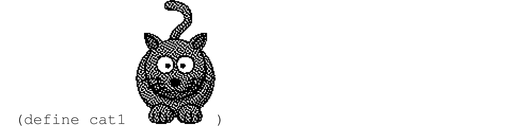
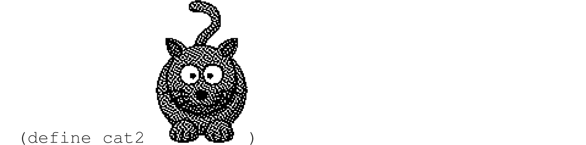

3.7 Virtual Pet Worlds
This exercise section introduces the first two elements of a virtual pet game. It starts with just a display of a cat that keeps walking across the canvas. Of course, all the walking makes the cat unhappy and its unhappiness shows. As with all pets, you can try petting, which helps some, or you can try feeding, which helps a lot more.
So let’s start with an image of our favorite cat:

Copy the cat image and paste it into DrRacket, then give the image a name with define, just like above.
Exercise 45. Design a “virtual cat” world program that continuously moves the cat from left to right. Let’s call it cat-prog and let’s assume it consumes the starting position of the cat. Furthermore, make the cat move three pixels per clock tick. Whenever the cat disappears on the right, it reappears on the left. You may wish to read up on the modulo function. 
Exercise 46. Improve the cat animation with a slightly different image:

Adjust the rendering function from exercise 45 so that it uses one cat image or the other based on whether the x-coordinate is odd. Read up on odd? in the HelpDesk, and use a cond expression to select cat images.
Exercise 47. Design a world program that maintains and displays a “happiness gauge.” Let’s call it gauge-prog, and let’s agree that the program consumes the maximum level of happiness. The gauge display starts with the maximum score, and with each clock tick, happiness decreases by -0.1; it never falls below 0, the minimum happiness score. Every time the down arrow key is pressed, happiness increases by 1/5; every time the up arrow is pressed, happiness jumps by 1/3.
To show the level of happiness, we use a scene with a solid, red rectangle with a black frame. For a happiness level of 0, the red bar should be gone; for the maximum happiness level of 100, the bar should go all the way across the scene.
Note When you know enough, we will explain how to combine the gauge program with the solution of exercise 45. Then we will be able to help the cat because as long as you ignore it, it becomes less happy. If you pet the cat, it becomes happier. If you feed the cat, it becomes much, much happier. So you can see why you want to know a lot more about designing world programs than these first three chapters can tell you.